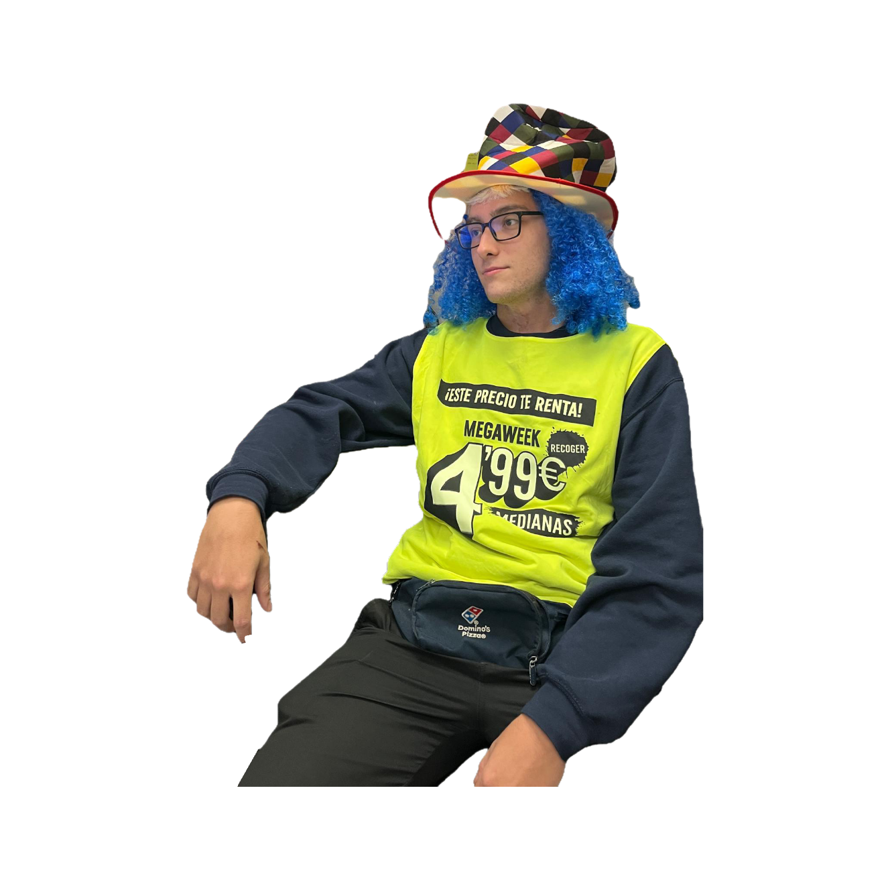

¿Qué opina la gente de José?
Orden original
Ordenar por valoración: alta → baja
Ordenar por valoración: baja → alta
Mostrar nombres de usuarios
✖
⚠️ ¡¡Últimos días!!
Pizzas a domicilio traídas por este tío
🍕 ¿Tu pizza llega fría? · Me la pela, dame mi propina 💸

🥳¡¡¡Felices 21!!!🎂 de parte de todos tus seres queridos
¿Cuántos has adivinado?